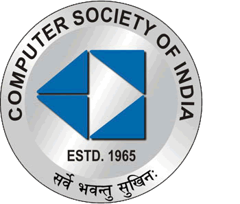

COMPUTER SOCIETY OF INDIA

Formed in 1965, the CSI has been instrumental in guiding the Indian IT industry down the right path since its formative years. Today, the CSI has 69 chapters all over India, 381 student branches, and more than 70,000 members, including India’s most famous IT industry leaders, brilliant scientists and dedicated academicians. Now, you have the opportunity to be a part of this distinguished fraternity too.The mission of the CSI is to facilitate research, knowledge sharing, learning and career enhancement for all categories of IT professionals, while simultaneously inspiring and nurturing new entrants into the industry and helping them to integrate into the IT community. The CSI is also working closely with other industry associations, government bodies and academia to ensure that the benefits of IT advancement ultimately percolate down to every single citizen of India.VJTI CSI student chapter was founded in the year February 2011. It was inaugurated by Dr BB Meshram (HoD, Computer Technology Department) and the Head of CSI Mumbai. CSI has since then planned various events, workshops , seminars , lectures for the student members.